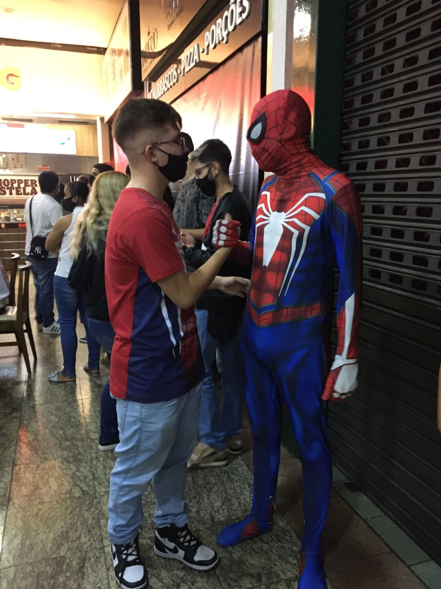

Umas das melhores curiosidades que posso falar aqui é e de poder dizer que sou um musico mais especificamente um violinista,fazem 8 anos que toco na orquestra(Jedutum) da minha igreja e mais um/dois anos de aprendizagem teórica e prática e hoje é uma das coisas que mais gosto de fazer e que tenho muito orgulho, pois acho a música um dos pilares da nossa vida, pois com ela as coisas do nosso dia a dia ficam um pouco mais leve e para muitas pessoas dão até um sentido de viver
Uma outra coisa interressante que gosto muito é minha parte geek sou um apaixonado por super-Hérois tanto dos quadrinhos quantos os dos filmes, essa minha parte começou quando eu assisti pela primeira vez o primeiro filme do Homem Aranha do Tobey Maguire e depois disso foi uma sequencia de videos do ei nerd para conhecer melhor esse mundo nerd, depois disso não parei kkk só fiquei ainda mais interessado nesse assunto que fiquei vendo ainda mais filmes e lendo quadrinhos... e recentimente acabei conhecendo meu heroi preferido o Homem Aranha no ultimo filme lançado delekkk
E por fim mas não menos importamte a última curiosidade é que em uma conversa eu gosto muito mais de ouvir do que falar, pois acredito que escutando mais vou conseguir absorver mais conhecimento do que do que falando, E assim no ambito profissional eu creio que em uma tarefa eu ficaria com poucas ou quase nenhuma dúvida enquanto a mesma, mas é claro que é necessario eu mostro a minha opnião durante a conversa.